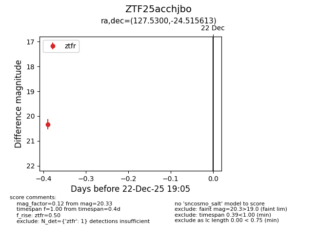
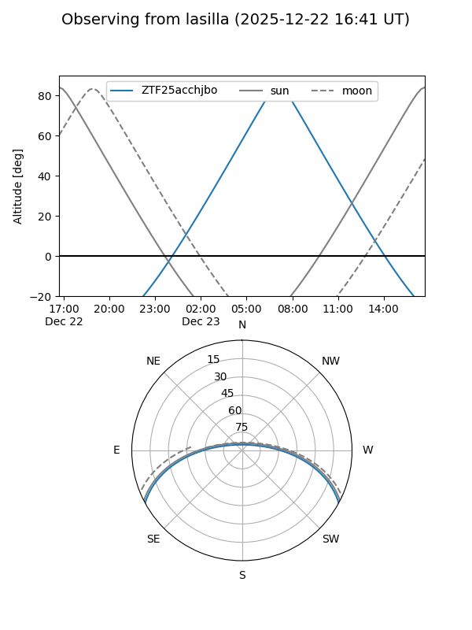
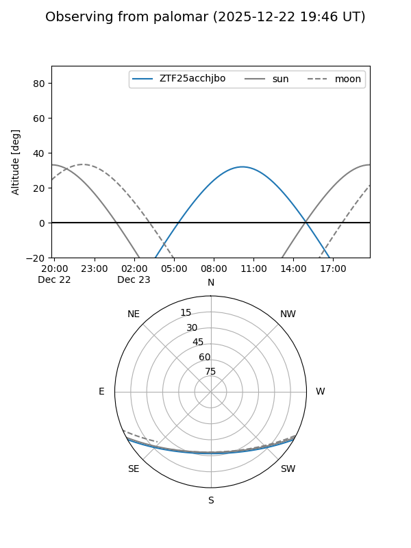

ZTF25acchjbo
Target ZTF25acchjbo at 2025-12-22 19:06
Aliases and brokers:
FINK: fink-portal.org/ZTF25acchjbo
Lasair: lasair-ztf.lsst.ac.uk/objects/ZTF25acchjbo
ALeRCE: alerce.online/object/ZTF25acchjbo
alt names
ZTF25acchjbo (ztf,fink_ztf)
Coordinates:
equatorial (ra, dec) = 127.5300,-24.51561
equatorial (HMS+DMS) = 08:30:07.21,-24:30:56.21
galactic (l, b) = (246.2007,+8.55652)
Flags:
Photometry:
last ztfr=20.33
1 ztfr detections
Lightcurve

Visibility


Additional plots